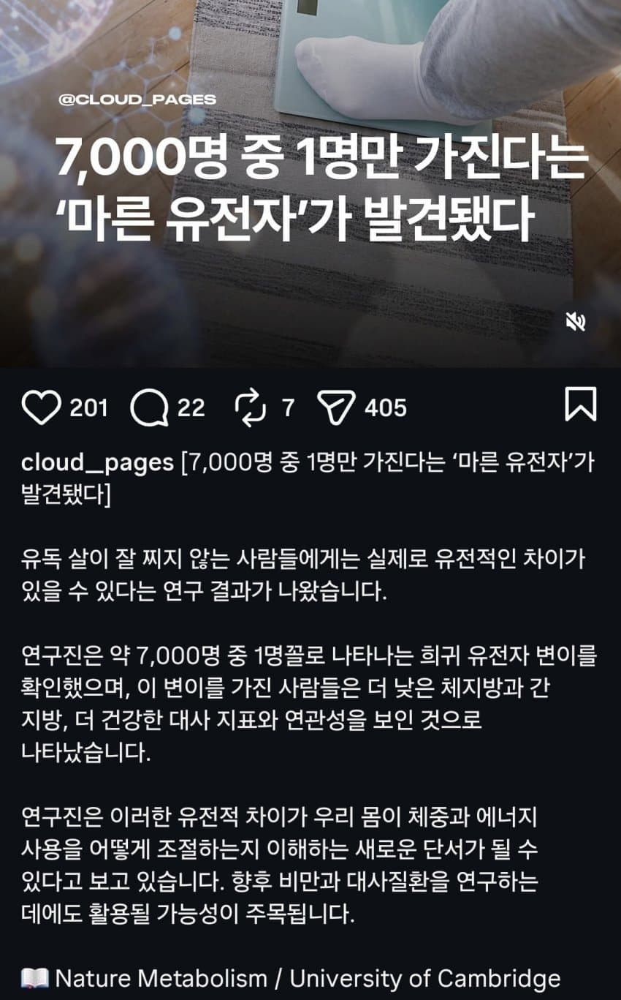

원래 우리 인류조상은 식량부족에 견딜수 있도록 자연진화로 수렴해서 FNIP1이라는 유전자를 보유하도록 설계되었음
FNIP1이라는 유전자의 특징은 잉여 에너지가 생기면 최대한 지방으로 저장하려고 함.
그리고 최대한 에너지 소모도 덜 하려고 함, 그래야 식량 부족에 견딜수 있기 때문임.
하지만 7000명중 1명꼴로 이 유전자에 돌연변이가 발생한다는 사실을 확인함.
돌연변이가 발생해서, 원래 잉여 에너지가 생기면 FNIP1이라는 유전자가 지방으로 저장해야하는데 그런거 없이 걍 흡수를 안하거나, 에너지 소모로 다 태워버림.
이 유전자 돌연변이를 가진 사람은 그 어떠한 식단도 필요없다고 함. 아무리 먹어대도 낮은 체중, 낮은 지방률, 근육량도 이상적이고, 혈당조절 능력도 뛰어나고 인슐린 민감도도 뛰어남.
쥐한테 의도적으로 FNIP1 돌연변이를 일으키고, 일부러 고열량, 고지방, 고당분 아무리 억지로 먹여도 정상 체중 유지했다고 함.
단점은 딱 하나밖에 없음.
만에하나 인류에 식량부족 사태가 닥친다면, 에너지를 저장하는 능력이 부족하기 때문에 가장 먼저 굶어죽는다고 함

또또또 쥐만